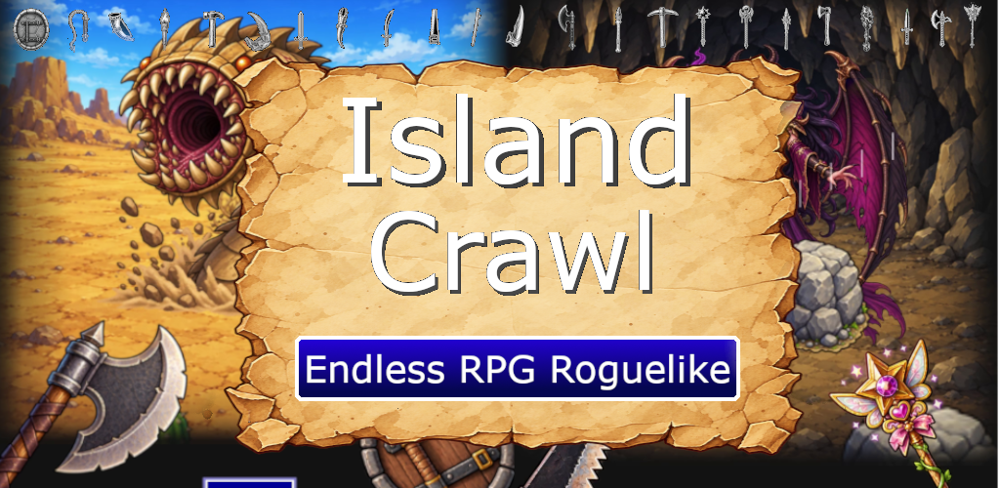
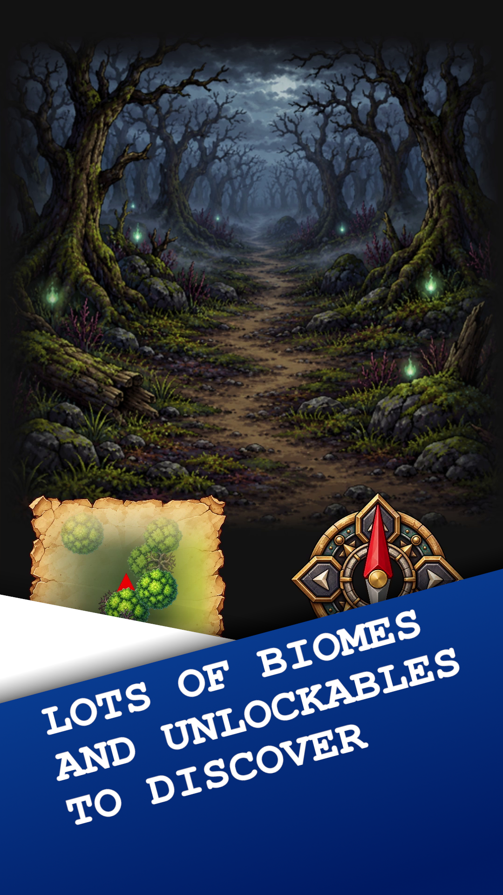
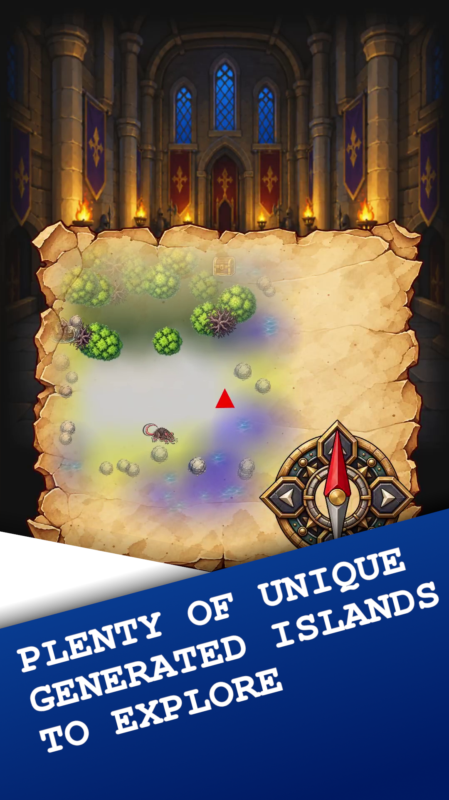
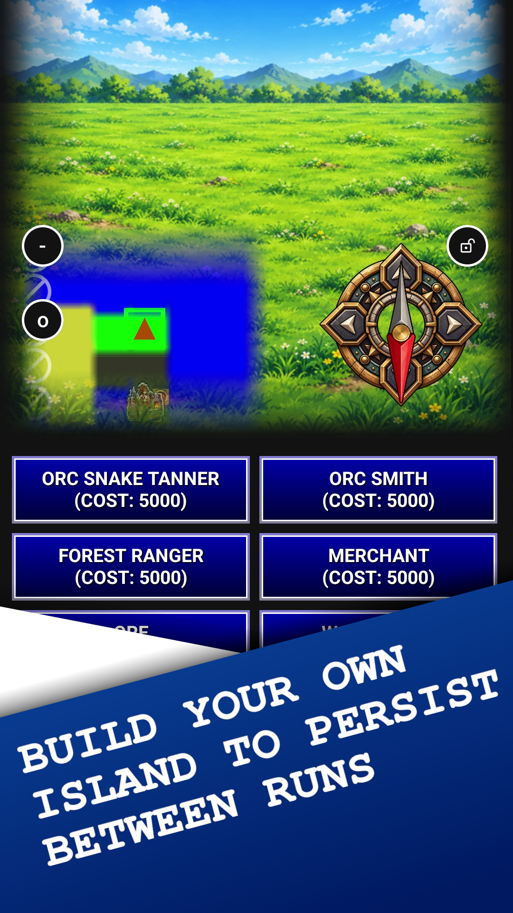
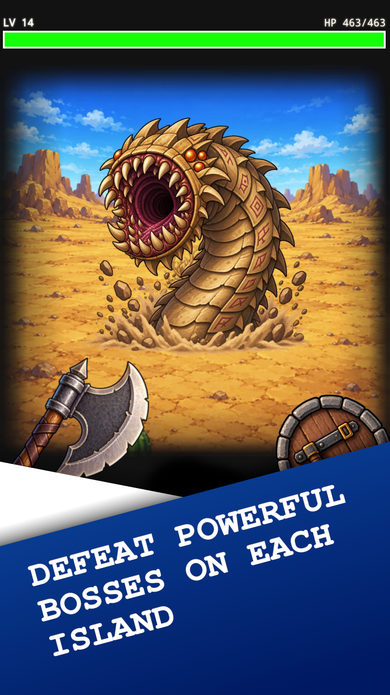
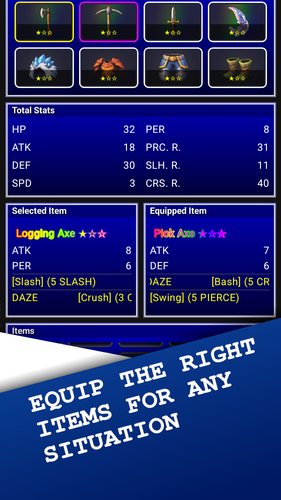
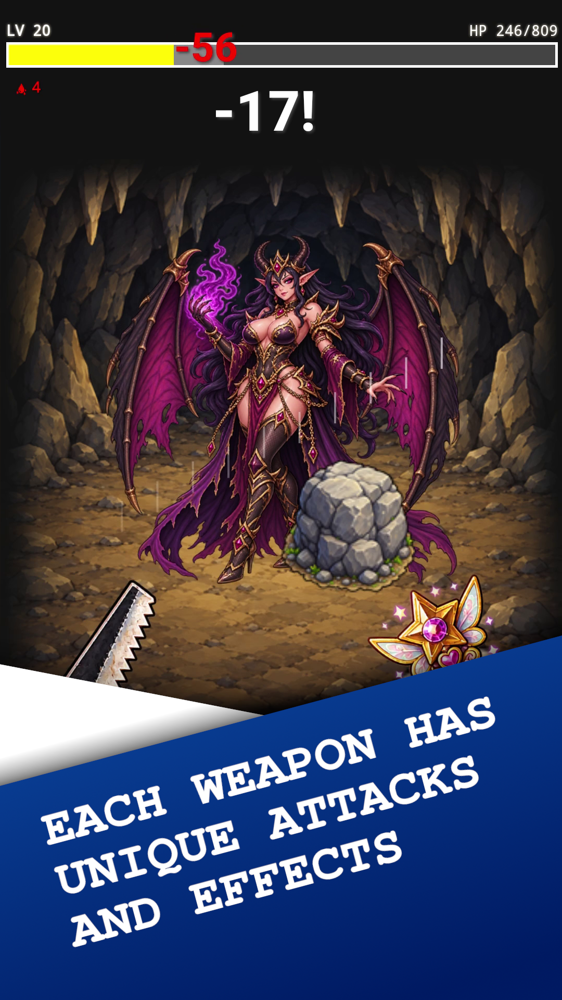
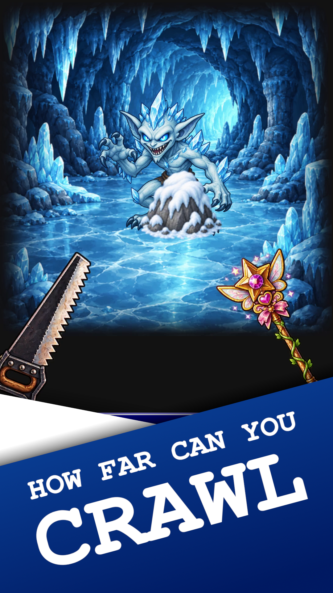

Island Crawl

Explore endless procedurally generated islands in an old-school, turn-based roguelite RPG. Fight enemies, discover powerful equipment, clear dungeons, and defeat island bosses to push your adventure further. How far can you make it?
Explore Endless Islands
Every run is a new adventure. Travel across procedurally generated islands filled with enemies, treasures, and dungeons. Gather better gear, prepare for each island’s boss, and defeat it to move on. The farther you travel, the tougher the challenge becomes.
Build Your Character
Your equipment shapes how you fight. Equip two weapons, each offering two different attacks, and experiment with combinations that suit your strategy. As you level up, choose from randomly offered passive traits to strengthen your character and create powerful synergies.
Strategic Turn-Based Combat
Winning takes more than raw damage. Attack boosts your damage, Defense reduces incoming hits, Speed influences turn order, and Perception affects critical-hit chance. Enemies can also resist specific damage types—Pierce, Slash, Crush, and Elemental—so choosing the right attacks matters.
Weapons and consumables can inflict effects such as Poison, Bleed, Burn, and Blindness. Poison deals damage on non-acting turns, Bleed punishes actions, Burn deals damage on every action, and Blindness can cause attacks to miss. Plan around your enemy’s strengths and weaknesses to survive.
Interested in the numbers? Read the full combat mechanics guide on Reddit →
Make Every Run Count
Try new weapon and trait combinations, challenge yourself to clear more islands, and work toward permanent unlocks that add new possibilities to future runs. Every journey is a chance to push a little farther.
Between runs, spend earned unlock points to expand your options, and build up your own island as you progress.
Screenshots
A glimpse of the worlds, enemies, and equipment you’ll encounter.






